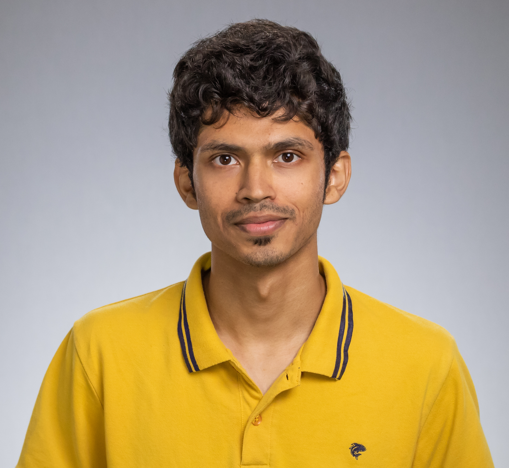
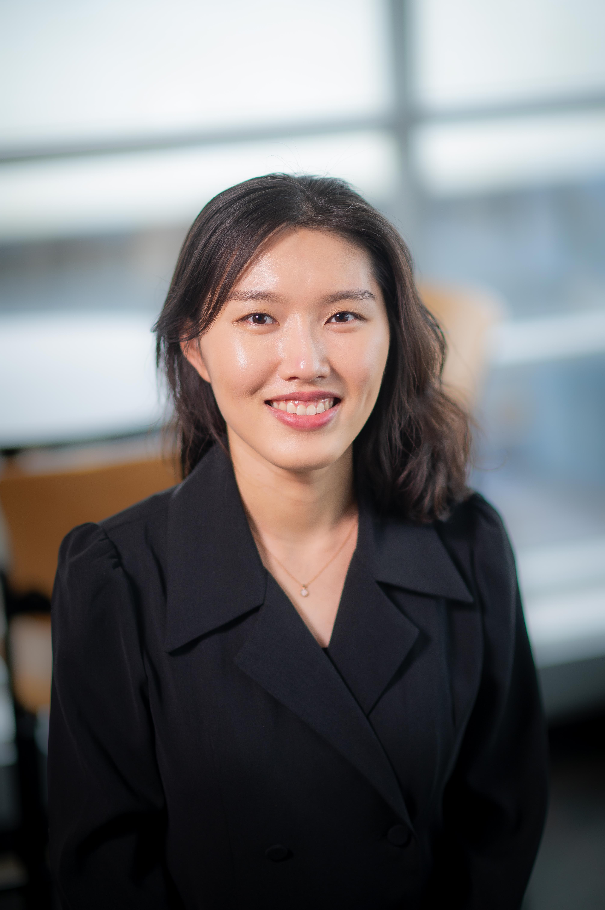
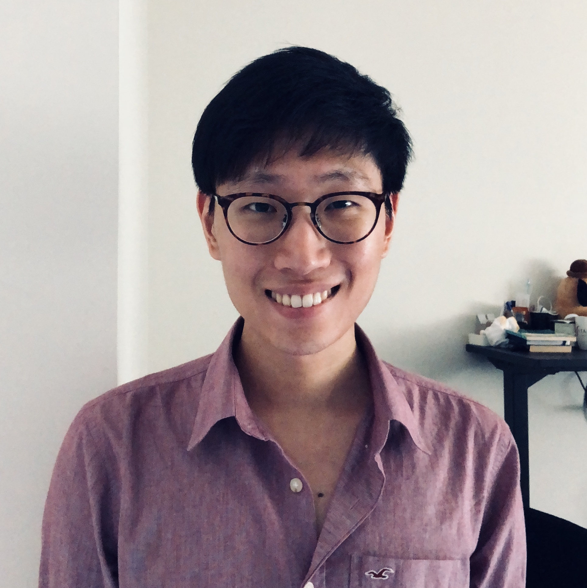
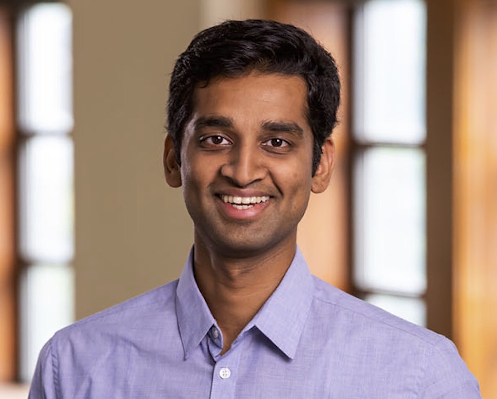
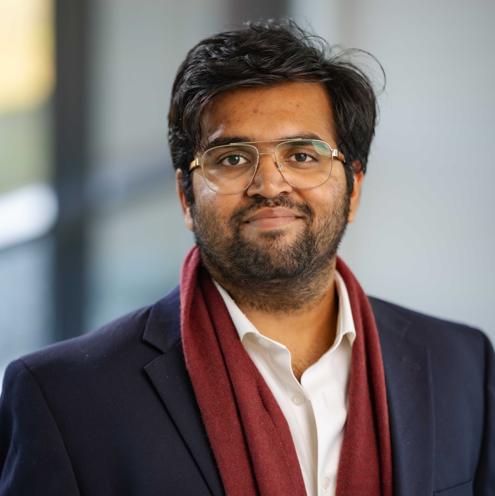

Ameet Deshpande
Princeton University
Ameet Deshpande is a Ph.D. student at Princeton University working on a variety of topics including AI safety, efficiency, and novel techniques to build foundation models.
His recent work on toxicity of persona-assigned language models has been covered by over 20 news outlets.
He has published several papers in top-tier NLP and ML venues like ICML, NAACL, and EMNLP.
He has served on the PC for most *CL conferences since 2019.

EunJeong Hwang
University of British Columbia
EunJeong Hwang is a PhD student at the University of British Columbia. Her primary research interests lie in the personalization of large language models, structured reasoning, and analyzing large multimodal models. Her work analyzed how well implicit contexts (such as vision or persona) are aligned well with large languge models.
Vishvak Murahari
Princeton University
Vishvak Murahari is a computer scientist pursuing his Ph.D. at Princeton University. He was runners-up to the Bell Labs Prize, 2022 for his seminal work on data multiplexing. He has published papers at top-tier machine learning conferences like EMNLP, NeurIPS, ACL, and ECCV. His work on AI safety and efficient AI has been broadly covered across 20 news outlets and magazines. He was an Area Chair for EMNLP 2022 and was an organizer for the Visual Question Answering and Dialog Workshop at CVPR 2020

Joon Sung Park
Stanford University
Joon Sung Park is a computer science PhD student in the Human-Computer Interaction and Natural Language Processing groups at Stanford University. His work introduced the concept of, and the techniques for building generative agents -- computational software agents that simulate human behavior. He has organized a UIST workshop on architecting novel interactions with generative AI models.

Diyi Yang
Stanford University
Diyi Yang is an assistant professor in the Computer Science Department at Stanford University. Diyi has organized multiple workshops at NLP conferences: Widening NLP Workshops at NAACL 2018 and ACL 2019, Casual Inference workshop at EMNLP 2021 and so on.
Ashish Sabharwal
Allen Institute for Artificial Intelligence (AI2)
Ashish Sabharwal is a Principal Research Scientist at the Allen Institute for AI (AI2). Ashish has co-authored over 135 publications in major journals and conferences, contributed several surveys and tutorials. His research findings have been recognized with best paper awards (AAAI, CP, AKBC), a best student paper award (UAI), and runner-up prizes (UAI, IJCAI-JAIR 5-Year Best). He is a member of AAAI (senior), ACM, and AAAS.

Karthik Narasimhan
Princeton University
Karthik Narasimhan is an assistant professor of Computer Science at Princeton University. His prior research includes the development of autonomous agents for text adventure games, methods for leveraging textual manuals for RL (JAIR 2018, ICML 2021), and techniques to learn with human feedback (AAAI 2021, NeurIPS 2021).
He has organized the First Workshop on Learning with Natural Language Supervision at ACL 2022.

Ashwin Kalyan
Allen Institute for Artificial Intelligence (AI2)
Ashwin Kalyan is a research scientist at Allen Institute for Artificial Intelligence (AI2). He has worked on various facets of AI and NLP including decoding algorithms (AAAI 2018, ICML 2020), program synthesis (ICLR 2018, NeurIPS 2021) and mathematical reasoning (EMNLP 2022, NeurIPS 2022, ACL 2022, EMNLP 2021). He co-organized a tutorial — “Deep Learning in Mathematical Reasoning: Recent Advances and Beyond” at IJCAI 2023.